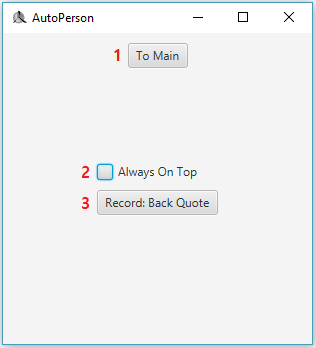

Part 5: Setting Page
이번에는 Setting Page에 대해 알아보도록 하겠습니다.
아래 사진이 Setting Page입니다. 
번호에 대한 설명
번호
설명
1
Main Page로 이동합니다.
2
체크박스를 선택하면 프로그램이 항상 위로 올라오게 됩니다.
3
녹화 버튼을 나타냅니다.
클릭하여 녹화 버튼을 변경할 수 있습니다.
Part 6: Edit Page